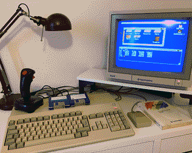

Why Amiga 500?
The Amiga 500 with it's 4-5 million units sold was Commodore's best selling machine after the C64 and the one
that kept the company around for a little longer. Today it's one of the best retro computer platforms with
advantages hard to match.
- It was the most popular Amiga model, so there are still plenty available second hand, which makes it the
cheapest too.
- It's the simplest to get started with. Turn it on, insert a floppy and enjoy.
- Using an Amiga 500 with a Kickstart 1.3 is fun in itself. Besides the biggest game library in the Amiga
world, there are plenty of productivity software for it too. It has software that can be still useful today
(think DeluxePaint IV, ProTracker, OctaMed, WordPerfect).
- As it was very popular in Europe, there are lots of great games and demoscene productions made by European
studios, groups and individuals. The limitations of the machine make it an attractive target platform for new
demos and retro games,
so there are still new releases to check out from time to time.
- It's also the easiest to repair. There are plenty of spare parts available, and most capacitors were still
thru-hole mounted, so it's easy to recap too if needed. The capacitors on the motherboard last much longer
than the surface mounted ones in the newer amigas and there was no battery to leak (except on expansion boards
or the A500+, so pay attention to those). The CPU and most custom chips are socketed and easily replacable and
even upgradable. With some motherboard revisions you can esentially upgrade your OCS A500 into an ECS A500+.
The keyboard uses wires and a pin connector, instead of the more vulnerable foil connector of later machines.
- There is even a newly produced case (top and
bottom shell) in two colors and a newly made mechanical keyboard and caps.
- Very easy to expand. The Amiga 500 has a Zorro II like expansion slot on it's side, that exposes the CPU
signals, along with other specific signals like ROM, RAM, voltage, etc. You can connect both old and new
expansions to it, without opening up the machine. Adding a SCSI Hard Drive like the Commodore A590 or a GVP
A500 HD+, or a versatile CPU accelerator and memory expansion board like the ACA500Plus couldn't be easier.
- There are countless new community developed hardware expansion options. If you're into hacking electronics,
you can modify just about anything on it. HDMI video out, 68030 CPU accelerator, network adapter, WiFi modem,
internal IDE hard drive controller with CF card support and so on.
- The hardware given it's limits is still fairly simple to understand, so if you want to get into Assembly
prrogramming, there are great cross-platform development tools, emulators and a complete hardware reference
manual.
- For people interested in software development, there are plenty of higher level languages as well to choose
from: C, Amiga E, AMOS and BlitzBasic, just to name a few. There is even a game engine under active
development that supports both the Amiga and the Sega Genesis/MegaDrive.
If you own an Amiga 500, I hope you'll find something useful here, and if you don't, I hope you'll get
motivated to get one.

Back to Top


 The Solana Vanishing Act
The Solana Vanishing Act